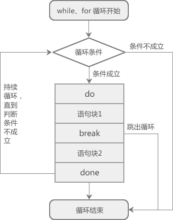
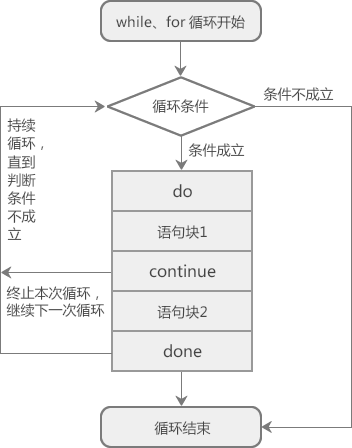

Shell break和continue跳出循环详解
使用 while、until、for、select 循环时，如果想提前结束循环（在不满足结束条件的情况下结束循环），可以使用 break 或者 continue 关键字。
在C语言、C++、C#、Python、Java 等大部分编程语言中，break 和 continue 只能跳出当前层次的循环，内层循环中的 break 和 continue 对外层循环不起作用；但是 Shell 中的 break 和 continue 却能够跳出多层循环，也就是说，内层循环中的 break 和 continue 能够跳出外层循环。
在实际开发中，break 和 continue 一般只用来跳出当前层次的循环，很少有需要跳出多层循环的情况。
【实例1】不断从终端读取用户输入的正数，求它们相加的和：
10↙
20↙
30↙
0↙
sum=60
while 循环通过 read 命令的退出状态来判断循环条件是否成立，只有当按下 Ctrl+D 组合键（表示输入结束）时，
除了按下 Ctrl+D 组合键，你还可以输入一个小于等于零的整数，这样会执行 break 语句来终止循环（跳出循环）。
【实例2】使用 break 跳出双层循环。
如果 break 后面不跟数字的话，表示跳出当前循环，对于有两层嵌套的循环，就得使用两个 break 关键字。例如，输出一个 4*4 的矩阵：
当 j>4 成立时，执行第二个 break，跳出内层循环；外层循环依然执行，直到 i>4 成立，跳出外层循环。内层循环共执行了 4 次，外层循环共执行了 1 次。
我们也可以在 break 后面跟一个数字，让它一次性地跳出两层循环，请看下面的代码：
continue 关键字也通常和 if 语句一起使用，即满足条件时便跳出循环。
【实例1】不断从终端读取用户输入的 100 以内的正数，求它们的和：
10↙
20↙
-1000↙
5↙
9999↙
25↙
sum=60
变量 sum 最终的值为 60，-1000 和 9999 并没有计算在内，这是因为 -1000 和 9999 不在 1~100 的范围内，if 判断条件成立，所以执行了 continue 语句，跳过了当次循环，也就是跳过了
注意，只有按下 Ctrl+D 组合键输入才会结束，
【实例2】使用 continue 跳出多层循环，请看下面的代码：
在C语言、C++、C#、Python、Java 等大部分编程语言中，break 和 continue 只能跳出当前层次的循环，内层循环中的 break 和 continue 对外层循环不起作用；但是 Shell 中的 break 和 continue 却能够跳出多层循环，也就是说，内层循环中的 break 和 continue 能够跳出外层循环。
在实际开发中，break 和 continue 一般只用来跳出当前层次的循环，很少有需要跳出多层循环的情况。
break 关键字
Shell break 关键字的用法为：break n
n 表示跳出循环的层数，如果省略 n，则表示跳出当前的整个循环。break 关键字通常和 if 语句一起使用，即满足条件时便跳出循环。

图1：Shell break关键字原理示意图
图1：Shell break关键字原理示意图
【实例1】不断从终端读取用户输入的正数，求它们相加的和：
#!/bin/bash
sum=0
while read n; do
if((n>0)); then
((sum+=n))
else
break
fi
done
echo "sum=$sum"
运行结果：10↙
20↙
30↙
0↙
sum=60
while 循环通过 read 命令的退出状态来判断循环条件是否成立，只有当按下 Ctrl+D 组合键（表示输入结束）时，
read n才会判断失败，此时 while 循环终止。除了按下 Ctrl+D 组合键，你还可以输入一个小于等于零的整数，这样会执行 break 语句来终止循环（跳出循环）。
【实例2】使用 break 跳出双层循环。
如果 break 后面不跟数字的话，表示跳出当前循环，对于有两层嵌套的循环，就得使用两个 break 关键字。例如，输出一个 4*4 的矩阵：
#!/bin/bash
i=0
while ((++i)); do #外层循环
if((i>4)); then
break #跳出外层循环
fi
j=0;
while ((++j)); do #内层循环
if((j>4)); then
break #跳出内层循环
fi
printf "%-4d" $((i*j))
done
printf "\n"
done
运行结果：
1 2 3 4 2 4 6 8 3 6 9 12 4 8 12 16
当 j>4 成立时，执行第二个 break，跳出内层循环；外层循环依然执行，直到 i>4 成立，跳出外层循环。内层循环共执行了 4 次，外层循环共执行了 1 次。
我们也可以在 break 后面跟一个数字，让它一次性地跳出两层循环，请看下面的代码：
#!/bin/bash
i=0
while ((++i)); do #外层循环
j=0;
while ((++j)); do #内层循环
if((i>4)); then
break 2 #跳出内外两层循环
fi
if((j>4)); then
break #跳出内层循环
fi
printf "%-4d" $((i*j))
done
printf "\n"
done
修改后的代码将所有 break 都移到了内层循环里面。读者需要重点关注break 2这条语句，它使得程序可以一次性跳出两层循环，也就是先跳出内层循环，再跳出外层循环。
continue 关键字
Shell continue 关键字的用法为：continue n
n 表示循环的层数：- 如果省略 n，则表示 continue 只对当前层次的循环语句有效，遇到 continue 会跳过本次循环，忽略本次循环的剩余代码，直接进入下一次循环。
- 如果带上 n，比如 n 的值为 2，那么 continue 对内层和外层循环语句都有效，不但内层会跳过本次循环，外层也会跳过本次循环，其效果相当于内层循环和外层循环同时执行了不带 n 的 continue。这么说可能有点难以理解，稍后我们通过代码来演示。
continue 关键字也通常和 if 语句一起使用，即满足条件时便跳出循环。

图2：Shell continue关键字原理示意图
图2：Shell continue关键字原理示意图
【实例1】不断从终端读取用户输入的 100 以内的正数，求它们的和：
#!/bin/bash
sum=0
while read n; do
if((n<1 || n>100)); then
continue
fi
((sum+=n))
done
echo "sum=$sum"
运行结果：10↙
20↙
-1000↙
5↙
9999↙
25↙
sum=60
变量 sum 最终的值为 60，-1000 和 9999 并没有计算在内，这是因为 -1000 和 9999 不在 1~100 的范围内，if 判断条件成立，所以执行了 continue 语句，跳过了当次循环，也就是跳过了
((sum+=n))这条语句。注意，只有按下 Ctrl+D 组合键输入才会结束，
read n才会判断失败，while 循环才会终止。【实例2】使用 continue 跳出多层循环，请看下面的代码：
#!/bin/bash
for((i=1; i<=5; i++)); do
for((j=1; j<=5; j++)); do
if((i*j==12)); then
continue 2
fi
printf "%d*%d=%-4d" $i $j $((i*j))
done
printf "\n"
done
运行结果：
1*1=1 1*2=2 1*3=3 1*4=4 1*5=5 2*1=2 2*2=4 2*3=6 2*4=8 2*5=10 3*1=3 3*2=6 3*3=9 4*1=4 4*2=8 5*1=5 5*2=10 5*3=15 5*4=20 5*5=25从运行结果可以看出，遇到
continue 2时，不但跳过了内层 for 循环，也跳过了外层 for 循环。
break 和 continue 的区别
break 用来结束所有循环，循环语句不再有执行的机会；continue 用来结束本次循环，直接跳到下一次循环，如果循环条件成立，还会继续循环。关注公众号「站长严长生」，在手机上阅读所有教程，随时随地都能学习。内含一款搜索神器，免费下载全网书籍和视频。

微信扫码关注公众号